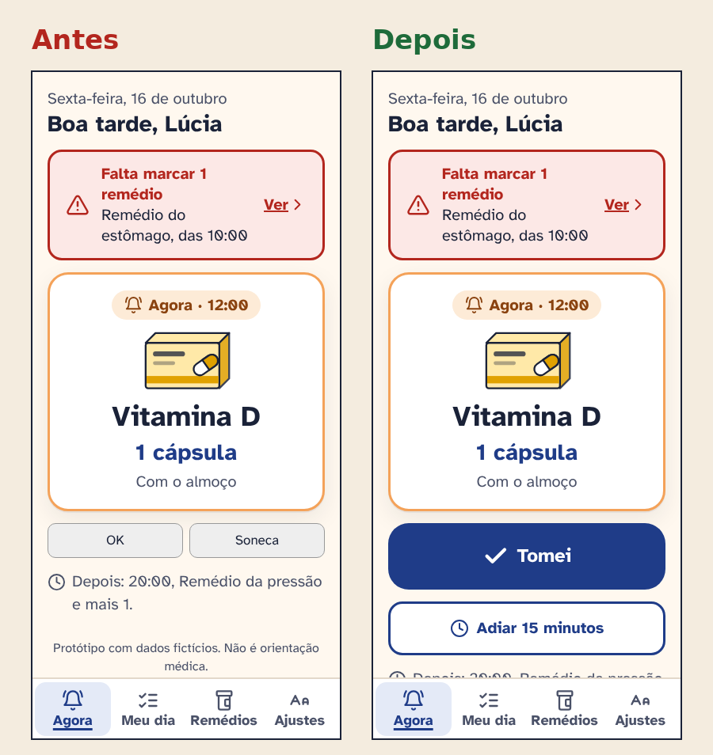
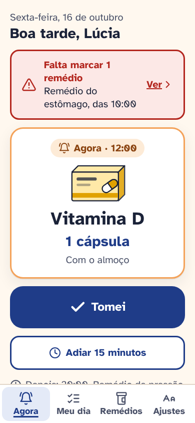
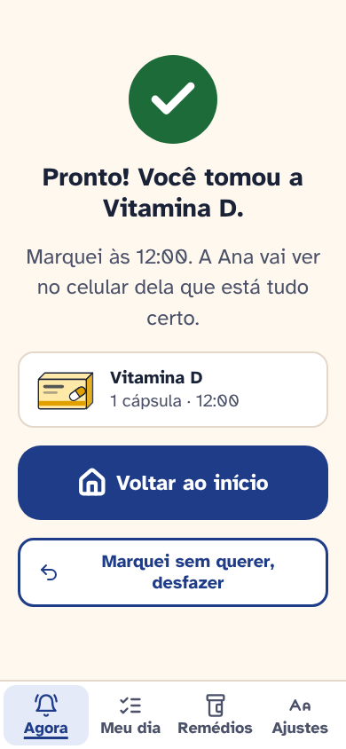
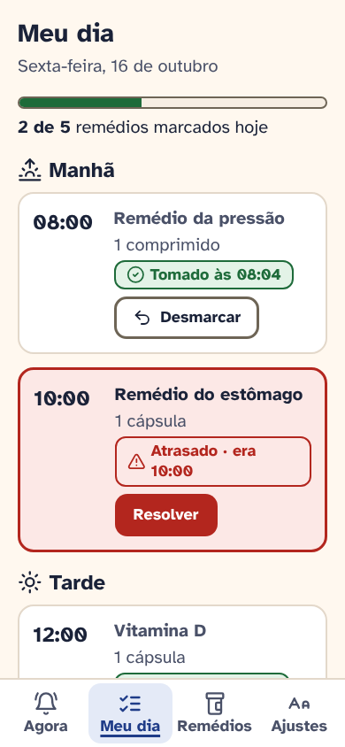
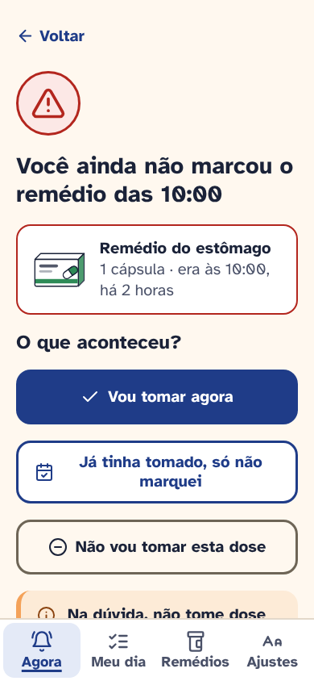
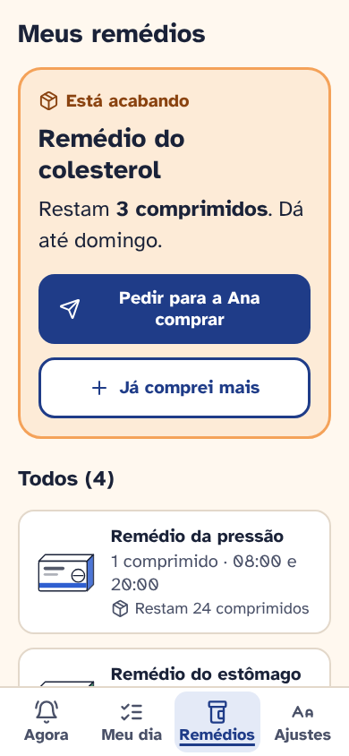
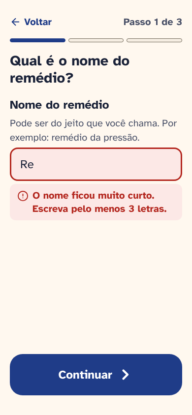
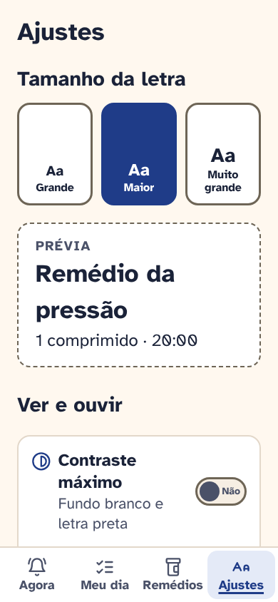
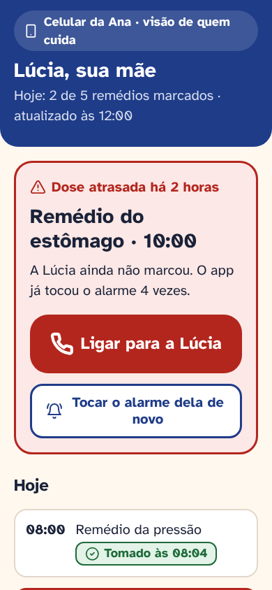

Lembra
Um lembrete de remédios pensado para quem tem 70 anos ou mais: uma ação por tela, letra a partir de 20px e a família sabendo no mesmo dia quando uma dose foi esquecida.

Contexto
Muita gente idosa toma vários remédios por dia, cada um num horário. Os apps que existem costumam ter letra pequena, ícones sem nome e gestos escondidos. O alarme do celular toca, mas não guarda nada, e aí vem a pergunta de sempre: já tomei ou não?
Do outro lado está o filho, a filha ou a cuidadora, que acompanha de longe e só fica sabendo da dose esquecida numa conversa dias depois. O Lembra é um projeto conceitual que fiz sozinho para resolver as duas pontas, com acessibilidade e design inclusivo como ponto de partida, não como ajuste no fim. Todos os remédios e dados do protótipo são fictícios e o app não dá orientação médica.
Quem toma muitos remédios fica na dúvida se já tomou, e o familiar só descobre a dose esquecida dias depois.O problema, em uma frase
Processo
Comecei pelo benchmark de quatro produtos reais: Medisafe e MyTherapy, apps conhecidos de lembrete de remédio; os alarmes e lembretes do próprio celular, que muita gente idosa já usa; e o Meu SUS Digital (antigo Conecte SUS), para entender o contexto de saúde digital no Brasil. Olhei só características amplamente conhecidas de cada um.
O alarme é confiável, mas não registra
O alarme do celular é conhecido e toca com confiança, mas não guarda o que foi tomado. No Lembra o lembrete toca como alarme e só para quando a pessoa toca em "Tomei" ou "Adiar".
Apps completos pesam na tela
Os apps de remédio mais conhecidos fazem muita coisa, e isso aparece em telas cheias. Decidi por uma ação por tela: a tela "Agora" mostra só o próximo remédio e dois botões enormes.
Acompanhar de longe fica escondido
Ter alguém que acompanha as doses já existe, mas como recurso secundário. No Lembra a visão do cuidador é central, com a dose atrasada em destaque e o botão de ligar.
Montei duas proto-personas, marcadas como hipótese porque não vieram de entrevistas: a Dona Lúcia, de 74 anos, que toma quatro remédios e fica na dúvida se já tomou, e a Ana, a filha que acompanha de longe. A jornada de um dia de remédios mostrou que o momento mais crítico é depois do horário, quando a dose foi esquecida. Daí saíram os fluxos de dose tomada, dose adiada, dose esquecida, cadastro em passos e a visão do cuidador.
Avaliei o meu próprio protótipo com as 10 heurísticas de Nielsen, com a letra no tamanho padrão e no maior. Achei 9 problemas e corrigi 7; os 2 pendentes dependem de teste em aparelho real ou de uma tela nova. O mais grave: os botões "OK" e "Soneca" ficavam lado a lado, iguais, e era fácil tocar no errado. Agora "Tomei" é grande e azul em cima, e "Adiar 15 minutos" fica embaixo, com contorno e espaço entre os dois.

Solução
A tela Agora mostra só o próximo remédio, com nome, dose e o desenho da caixa, e dois botões enormes: "Tomei" e "Adiar 15 minutos". Depois do toque, a tela inteira confirma, com a opção de desfazer. O Meu dia separa manhã, tarde e noite, com estados sempre escritos (tomado, atrasado, próximo), nunca só por cor. Quando uma dose é esquecida, o app pergunta o que aconteceu e lembra de não tomar dose dobrada. O cadastro é em três passos com erros explicados, o estoque avisa quando restam poucos comprimidos, e a letra vai de 20px a 28px com prévia. Para quem cuida, a dose atrasada aparece em vermelho no topo, com o botão de ligar.








Handoff
Para o produto sair do papel, o desenvolvimento precisa de mais do que telas bonitas. Entreguei:
- Tokens em variáveis de cor, tipografia, espaço e raio, com o modo de contraste máximo como um segundo conjunto de valores.
- Tabela de contraste de todos os pares de cor, com texto principal em 14,98:1 e botão principal em 10,19:1.
- Regras de acessibilidade por componente: alvo mínimo de 48px, foco visível, estado com ícone e texto, erros ligados ao campo e avisos lidos pelo leitor de tela.
- Fluxos documentados do caminho feliz, dose esquecida, cadastro e visão do cuidador, além de um roteiro de teste com 5 pessoas.
Resultado
- 8
- telas no protótipo
- 9
- problemas achados na heurística
- 7
- corrigidos
- 4
- produtos no benchmark
O próximo passo é testar com 4 pessoas com 65 anos ou mais e 1 familiar, de preferência no celular delas e com a letra do jeito que já usam. As tarefas cobrem marcar a dose, desfazer, resolver uma dose esquecida, cadastrar um remédio e aumentar a letra. Eu mediria o sucesso sem ajuda, os toques errados entre "Tomei" e "Adiar" e o tempo até o cuidador saber de uma dose atrasada.
Aprendizados
- Letra grande muda o layout, não só o texto. Com 28px as telas precisaram se reorganizar: horários acima do nome, avisos quebrando em linhas e abas com rótulo fixo.
- O erro mais perigoso aparece depois do horário. A dose esquecida pediu mais cuidado que o caminho feliz, porque a pior saída seria uma dose dobrada.
- Para quem cuida, menos gráfico e mais ação. Um alerta claro com o botão de ligar resolve mais do que qualquer número.
Entregas
App do morador e painel da portaria para condomínios: aviso de encomenda com código de retirada, reserva do salão sem conflito e avisos importantes em destaque.